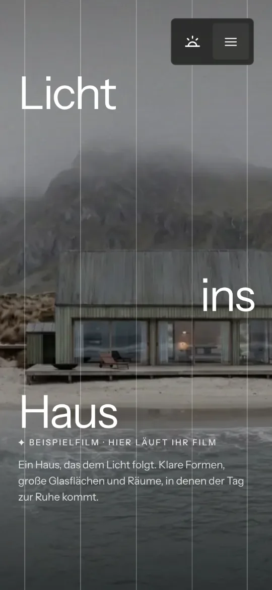

Beispiel · erfundener Betrieb
Website für Bauträger erstellen lassen: die Beispielseite Hellgrund
Ein Wohnprojekt wird zuerst am Bildschirm besichtigt. Wenn Sie als Bauträger oder Projektentwickler eine Website erstellen lassen möchten, zeigt diese Beispielseite für einen erfundenen Bauträger, wie Film, Eckdaten und Terminanfrage zusammenspielen.
Ein Bauträger stellt sein Wohnprojekt vor. Beim Scrollen läuft ein Film vom Haus bis in die Räume, danach folgen die Eckdaten, ein Rundgang in drei Einstellungen und die Terminanfrage für die Besichtigung.

Welche Aufgabe löst die Seite?
Ein Wohnprojekt wird zuerst am Bildschirm besichtigt. Die Seite stellt das Haus in Bildern und Film vor, nennt die Eckdaten und führt zur Terminanfrage.
Was enthält die Seite?
- Film beim Scrollen
- Rundgang
- Terminanfrage
Wie jede unserer Seiten ist sie zuerst für das Handy gestaltet und lädt schnell.
Für wen passt so eine Seite?
Für Bauträger, Projektentwickler und Makler, die ein einzelnes Objekt oder Projekt mit Film, Eckdaten und Besichtigungstermin vorstellen wollen.
Häufige Fragen zur Website für Bauträger
Wie zeigt eine Website ein Wohnprojekt, das noch gebaut wird?
In Bildern und Film, so wie die Beispielseite Hellgrund das Haus vorstellt. Visualisierungen und Aufnahmen vom Baufortschritt liefern Sie oder wir fotografieren sie mit Ihnen. Gezeigt wird nur, was dem Stand des Projekts entspricht.
Wohin kommen die Eckdaten des Projekts?
In einen übersichtlichen Block, den Besucher ohne Suchen finden. Die Beispielseite nennt die Eckdaten klar. Die Werte kommen von Ihnen, wir erfinden keine.
Wie lässt sich das Innere eines Hauses zeigen, bevor man davorsteht?
Die Seite ordnet Bilder und Film so, dass Besucher das Haus Raum für Raum am Bildschirm besichtigen. Das ist die Idee der Beispielseite: erst online ansehen, dann vor Ort.
Wie melden sich Interessenten für einen Besichtigungstermin?
Über eine kurze Terminanfrage, zu der die Seite führt. Sie fragt nur ab, was für den Termin nötig ist.
Welches Material brauche ich für so eine Seite?
Fotos oder Visualisierungen, wenn möglich einen Film, und die Eckdaten. Wir planen die Aufnahmen mit Ihnen. Rechte an Visualisierungen und Bildern müssen bei Ihnen liegen.
Wie entsteht Ihre eigene Seite?
In sechs Schritten: Briefing, Design, Feedback, Umsetzung, Abnahme, Live. Sie sehen den Entwurf, bevor wir bauen, und online geht die Seite erst mit Ihrem Okay. Zum Ablauf
Websites gibt es ab 2.990 € netto, einmalig. Alle Preise finden Sie bei MAKE Innovation: Alle Preise. Mehr zu Video und Reels und zu Social Media steht auf der Startseite.
Stand: November 2026